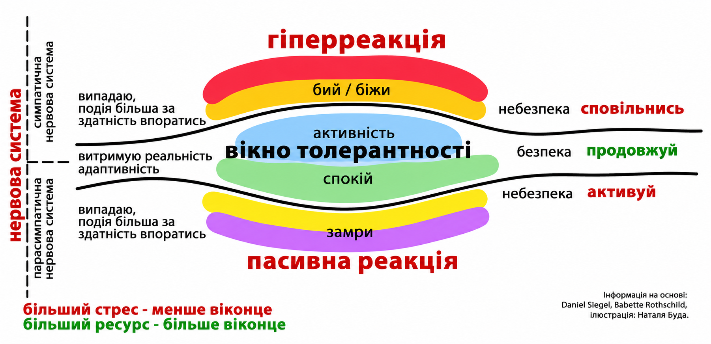

Як повернути контроль над власною нервовою системою: розширення вікна толерантності
У часи тривалого стресу, кризових подій та травматичного досвіду чимало людей відчувають, що втрачають контроль над власними емоційними та тілесними реакціями. Звичні життєві ситуації, які раніше сприймалися легко або вирішувалися автоматично, раптом починають викликати надмірну тривогу, неконтрольовані спалахи гніву або, навпаки, занурюють у стан глибокого емоційного оніміння, безперервної втоми та апатії. Людина опиняється в пастці власних відчуттів, де навіть найпростіші щоденні завдання вимагають колосальних зусиль, а внутрішній ресурс тане з кожним днем.

Така дезорганізація виникає через те, що людська нервова система під загрозою переходить у режим безперервного виживання. Мигдалеподібне тіло мозку, відповідальне за розпізнавання небезпеки, починає працювати на надвисоких обертах і зчитує будь-який подразник як потенційну загрозу життю. У результаті тіло реагує швидше, ніж включається раціональна кора головного мозку: прискорюється пульс, виникають м'язові затиски, збивається дихання або ж виникає відчуття повної відстороненості від власного тіла та навколишньої реальності.
Усвідомлення того, що ці реакції є нормальними відповідями психіки на ненормальні обставини, стає першим і найважливішим кроком до відновлення саморегуляції. Замість того щоб звинувачувати себе у слабкості чи безпорадності, важливо навчитися розпізнавати моменти, коли нервова система залишає свій природний простір рівноваги. Саме через соматичне заземлення, турботу про базові потреби та поступове відновлення внутрішньої безпеки ми отримуємо можливість знову повернути контроль над власними емоціями, відновлюючи стійкість та якість життя.
У клінічній психології та психотерапії травми для пояснення цих процесів використовується концепція «Вікна толерантності», яку розробив доктор Деніел Сігел. Розуміння цього механізму є першим кроком до відновлення саморегуляції та повернення відчуття безпеки.
Що таке «Вікно толерантності»?
Вікно толерантності — це оптимальний діапазон збудження нервової системи, у якому людина здатна ефективно сприймати інформацію, рефлексувати, приймати зважені рішення та екологічно проживати свої емоції.
Коли ви перебуваєте всередині свого вікна толерантності, ви можете відчувати сум, тривогу чи радість, але ці емоції не затоплюють вас і не вимикають ваше раціональне мислення.
Тож, поняття «вікно толерантності» описує ідеальний баланс нервової системи, коли людина залишається гнучкою, легко керує своїми емоціями та відчуває міцний зв'язок із навколишнім світом. Щойно емоційне або фізичне навантаження стає надто важким, цей внутрішній ресурс виснажується: психіка або зривається в крайність надмірного збудження із тривогою, люттю і панікою, або ж падає в глибоке гальмування, викликаючи байдужість, оніміння та повну втому.
Таким чином, під впливом хронічного стресу або воєнної травми це «вікно» звужується. Людина починає легко вилітати за його межі у два крайніх стани нервової системи:
1. Зона гіперзбудження
Це реакція симпатичної нервової системи («бий або біжи»).
Це реакція парасимпатичної нервової системи, зокрема її дорсальної вагусної гілки («завмри або вдай мертвого»).
Ознаки: емоційне оніміння, дисоціація (відчуття відстороненості від тіла чи реальності), хронічна втома, депресивні стани, відчуття безпорадності та опущених рук.
Тож, чому вікно звужується?
Нервова система адаптується до умов тривалої небезпеки. Якщо людина тривалий час перебуває в режимі виживання, її мозок переходить у стан підвищеної пильності (гіпервігілянтності). Те, що раніше сприймалося як дрібний стрес (наприклад, гучний звук чи запізнення), починає зчитуватися мигдалеподібним тілом (амигдалою) як реальна загроза життю, що миттєво викидає людину з вікна толерантності.
Розширення вікна толерантності не означає, що ви перестанете відчувати стрес. Це означає, що ваша нервова система стане більш гнучкою (резилієнтною), і ви зможете швидше повертатися до стану рівноваги.
З чого почати
Крок 1. Соматична стабілізація та заземлення
Спроби заспокоїти себе лише за допомогою думок під час паніки чи дисоціації часто неефективні, оскільки когнітивна кора мозку в цей момент пригнічена. Роботу слід починати через тіло:
Техніка заземлення «5-4-3-2-1»: повертає мозок у момент «тут і зараз» через відчуття органів чуття.
Спеціальні дихальні практики: подовжений видих (наприклад, вдих на 4 рахунки, видих на 6 або 8) активує блукаючий нерв і знижує частоту серцевих скорочень.
Навчіться помічати перші тілесні маркери наближення до меж вікна. Наприклад: «Коли я починаю стискати щелепи й прискорювати подих — це знак, що я виходжу в гіперзбудження». Вчасне усвідомлення дозволяє застосувати техніку саморегуляції до того, як відбудеться повна емоційна дисрегуляція.
Крок 3. Дозований контакт із труднощами (титрування)
У терапевтичній практиці опрацювання складних спогадів або емоцій відбувається невеликими «порціями» (титрування). Людина торкається важкого досвіду, а потім одразу повертається до ресурсного, безпечного стану. Це навчає нервову систему тому, що стрес є посильним і тимчасовим.
Крок 4. Залучення внутрішніх та зовнішніх ресурсів
Зовнішні опори: безпечні люди, підтримуючі спільноти, передбачувані щоденні рутини та ритуали.
Внутрішні опори: навички самоспівчуття, усвідомлення власних цінностей та сильних сторін.
Таким чином, реалізація цих чотирьох послідовних кроків дозволяє не лише купірувати гострі реакції стресу, а й поступово відновлювати гнучкість усієї нервової системи. Поєднуючи тілесне заземлення, відстеження ранніх сигналів тривоги, дозоване опрацювання важкого досвіду та опору на внутрішні й зовнішні ресурси, людина повертає собі агентність та здатність залишатися у власному «вікні толерантності» навіть серед життєвих штормів.
Тож, відновлення контролю над власною нервовою системою — це не одноразова дія, а систематичний процес тренування гнучкості вашої психіки. Повернення у вікно толерантності дає змогу не просто виживати в умовах кризи, а відновлювати якість життя, будувати глибші стосунки та зберігати ментальне здоров'я.
Якщо ви відчуваєте, що тривалий час перебуваєте в стані постійної тривоги або виснаження і не можете впоратися самостійно, звернення до фахівця з клінічної психології та психотерапії травми допоможе безпечно розширити ваші внутрішні ресурси.
Article
How to regain control of your nervous system: expanding the window of tolerance
During prolonged stress, crises and traumatic experiences, many people feel they are losing control of their emotional and bodily reactions. Familiar situations that once felt manageable or were dealt with automatically suddenly begin to trigger excessive anxiety and uncontrollable outbursts of anger, or, conversely, plunge people into deep emotional numbness, persistent fatigue and apathy. People become trapped in their own sensations, with even the simplest everyday tasks requiring enormous effort while their inner resources diminish day by day.
This disorganisation occurs because the human nervous system shifts into a continuous survival mode when under threat. The amygdala, the part of the brain responsible for recognising danger, begins working at an exceptionally high level and interprets any stimulus as a potential threat to life. As a result, the body reacts before the rational cerebral cortex engages: the pulse accelerates, muscles tighten, breathing becomes irregular, or a feeling of complete detachment from one's own body and the surrounding reality emerges.
Recognising that these reactions are normal responses of the psyche to abnormal circumstances is the first and most important step towards restoring self-regulation. Instead of blaming yourself for weakness or helplessness, it is important to learn to recognise the moments when your nervous system leaves its natural space of balance. Through somatic grounding, attention to basic needs and the gradual restoration of inner safety, we gain the opportunity to regain control of our emotions, rebuilding resilience and quality of life.
In clinical psychology and trauma psychotherapy, these processes are explained using the concept of the window of tolerance, developed by Dr Daniel Siegel. Understanding this mechanism is the first step towards restoring self-regulation and a sense of safety.
What is the window of tolerance?
The window of tolerance is the optimal range of nervous system arousal within which a person can process information effectively, reflect, make considered decisions and experience emotions in a healthy way.
When you are within your window of tolerance, you may feel sadness, anxiety or joy, but these emotions do not overwhelm you or shut down your rational thinking.
The concept of the window of tolerance therefore describes an ideal balance in the nervous system: a person remains flexible, manages emotions with ease and feels a strong connection to the world around them. As soon as emotional or physical demands become too great, this inner resource is depleted. The psyche either tips into excessive arousal, with anxiety, rage and panic, or drops into profound inhibition, causing indifference, numbness and complete exhaustion.
Under the influence of chronic stress or war trauma, this window narrows. A person begins to move beyond its boundaries easily, into two extreme nervous system states:
1. The hyperarousal zone
This is the response of the sympathetic nervous system: fight or flight.
Signs: panic attacks, intrusive anxious thoughts, outbursts of irritability and anger, muscle tension, a rapid heartbeat, an excessive need for control and a constant sense of threat.
2. The hypoarousal zone
This is the response of the parasympathetic nervous system, particularly its dorsal vagal branch: freeze or feign death.
Signs: emotional numbness, dissociation (a sense of detachment from the body or reality), chronic fatigue, depressive states, helplessness and a feeling of giving up.
Why does the window narrow?
The nervous system adapts to conditions of prolonged danger. If a person remains in survival mode for a long time, their brain shifts into a state of heightened vigilance, or hypervigilance. Something previously perceived as a minor stressor, such as a loud sound or being late, begins to be interpreted by the amygdala as a genuine threat to life, instantly pushing the person outside their window of tolerance.
Expanding the window of tolerance does not mean that you will stop experiencing stress. It means that your nervous system will become more flexible and resilient, allowing you to return to a state of balance more quickly.
Where to begin
Step 1. Somatic stabilisation and grounding
Trying to calm yourself through thoughts alone during panic or dissociation is often ineffective because the brain's cognitive cortex is suppressed at that moment. The work should begin through the body:
The 5-4-3-2-1 grounding technique: brings the brain back to the here and now through sensory experiences.
Specific breathing practices: a longer exhalation, for example breathing in for a count of 4 and out for 6 or 8, activates the vagus nerve and lowers the heart rate.
Step 2. Tracking trigger signals (neuroception)
Learn to notice the first bodily signs that you are approaching the edges of your window. For example: "When I start clenching my jaw and breathing faster, it is a sign that I am moving into hyperarousal." Timely awareness allows you to use a self-regulation technique before full emotional dysregulation occurs.
Step 3. Gradual contact with difficulties (titration)
In therapeutic practice, difficult memories or emotions are processed in small portions, known as titration. A person briefly touches on a difficult experience and then immediately returns to a resourceful, safe state. This teaches the nervous system that stress is manageable and temporary.
Step 4. Drawing on internal and external resources
External sources of support: safe people, supportive communities, and predictable daily routines and rituals.
Internal sources of support: self-compassion skills and awareness of your own values and strengths.
Putting these four consecutive steps into practice helps not only to alleviate acute stress reactions but also to gradually restore the flexibility of the entire nervous system. By combining bodily grounding, awareness of early anxiety signals, gradual processing of difficult experiences and reliance on internal and external resources, people regain their sense of agency and their ability to remain within their window of tolerance even amid life's storms.
Regaining control of your nervous system is therefore not a one-off action, but a systematic process of training psychological flexibility. Returning to your window of tolerance enables you not merely to survive a crisis, but to restore quality of life, build deeper relationships and preserve mental health.
If you feel that you have been in a state of constant anxiety or exhaustion for a long time and cannot cope on your own, seeking help from a specialist in clinical psychology and trauma psychotherapy can help you safely expand your inner resources.